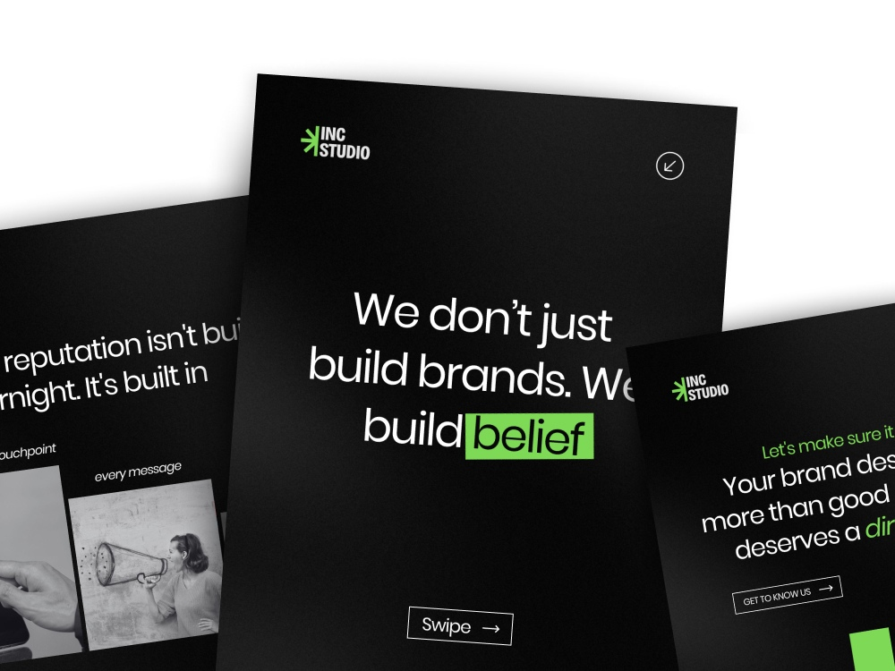
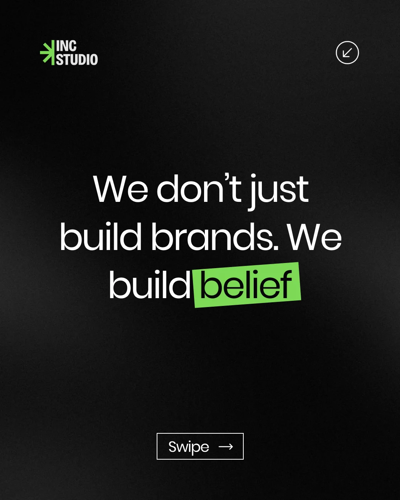
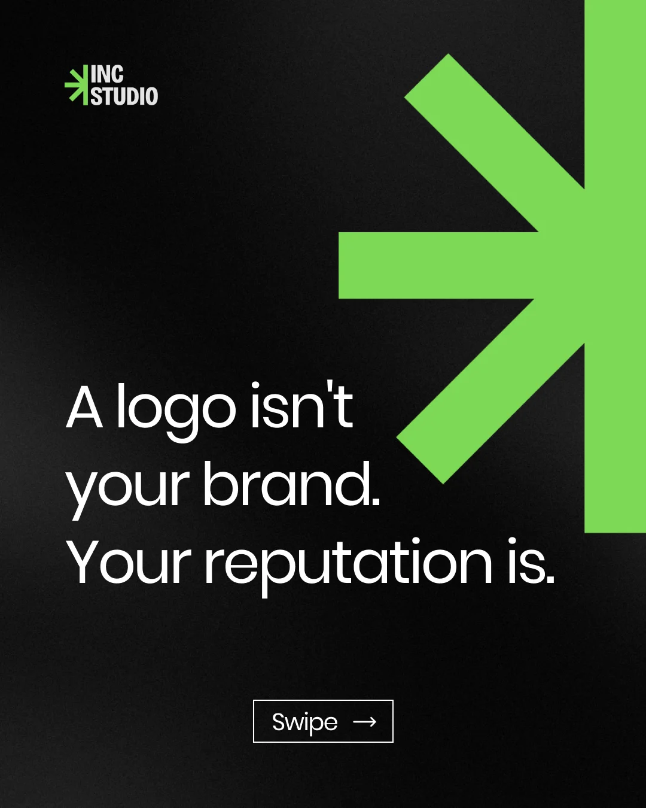
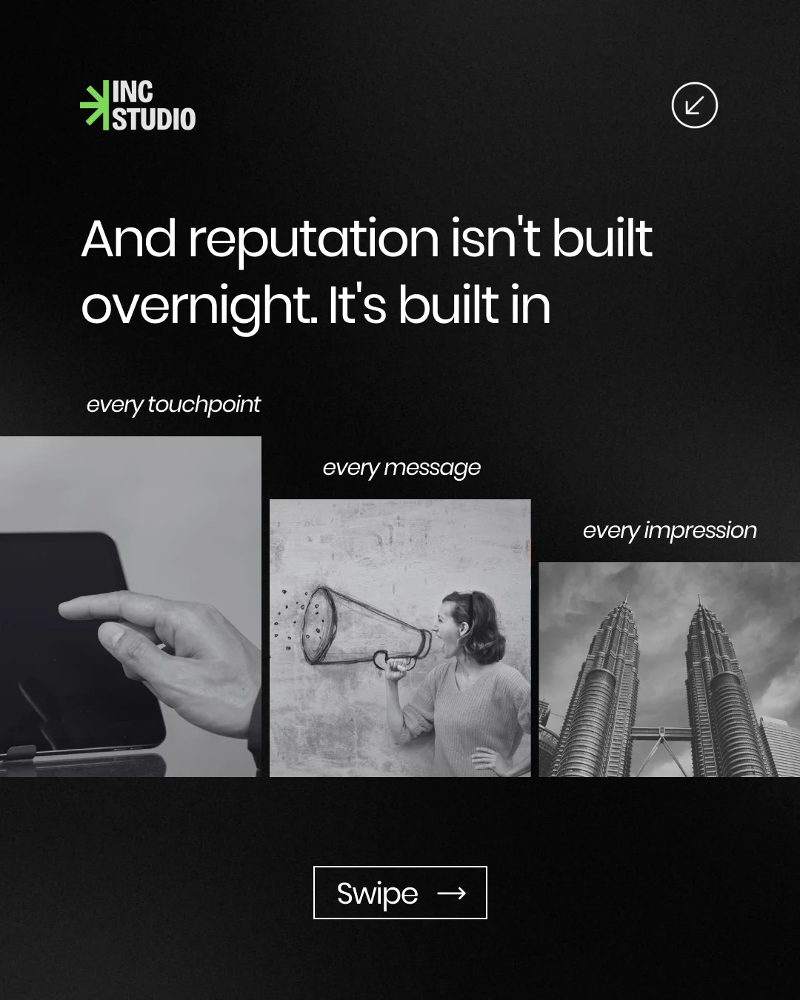
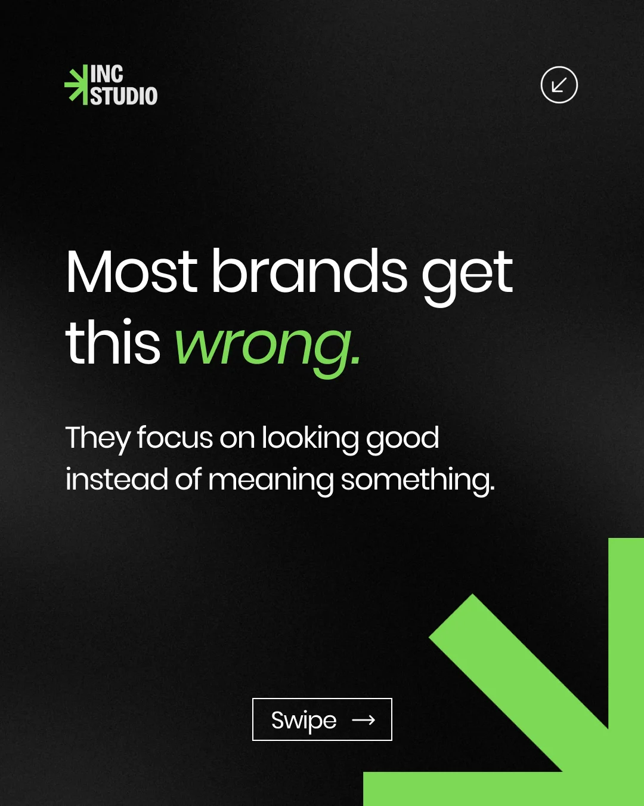
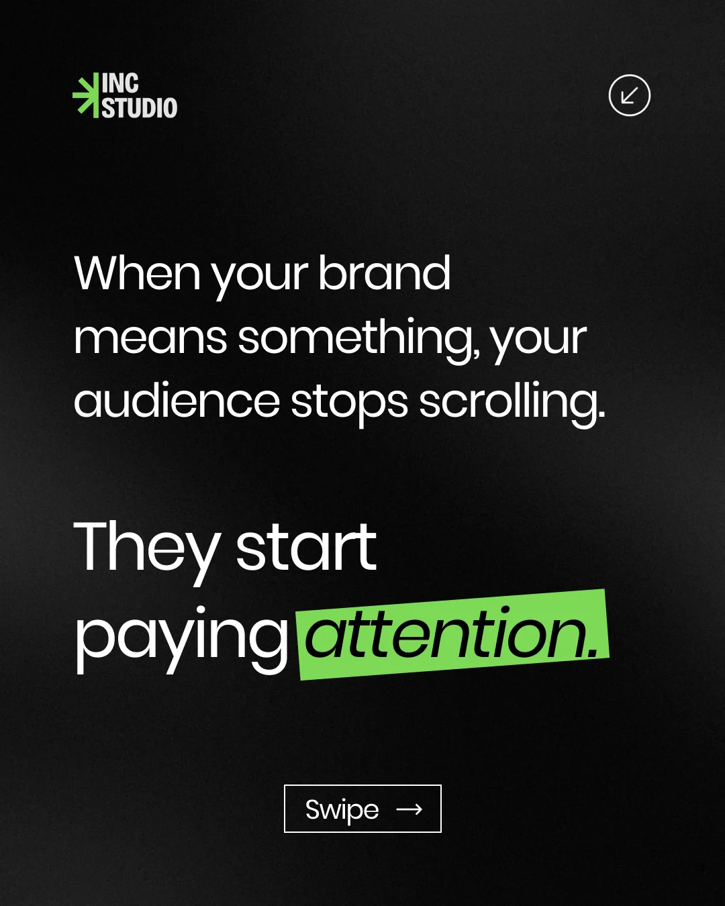
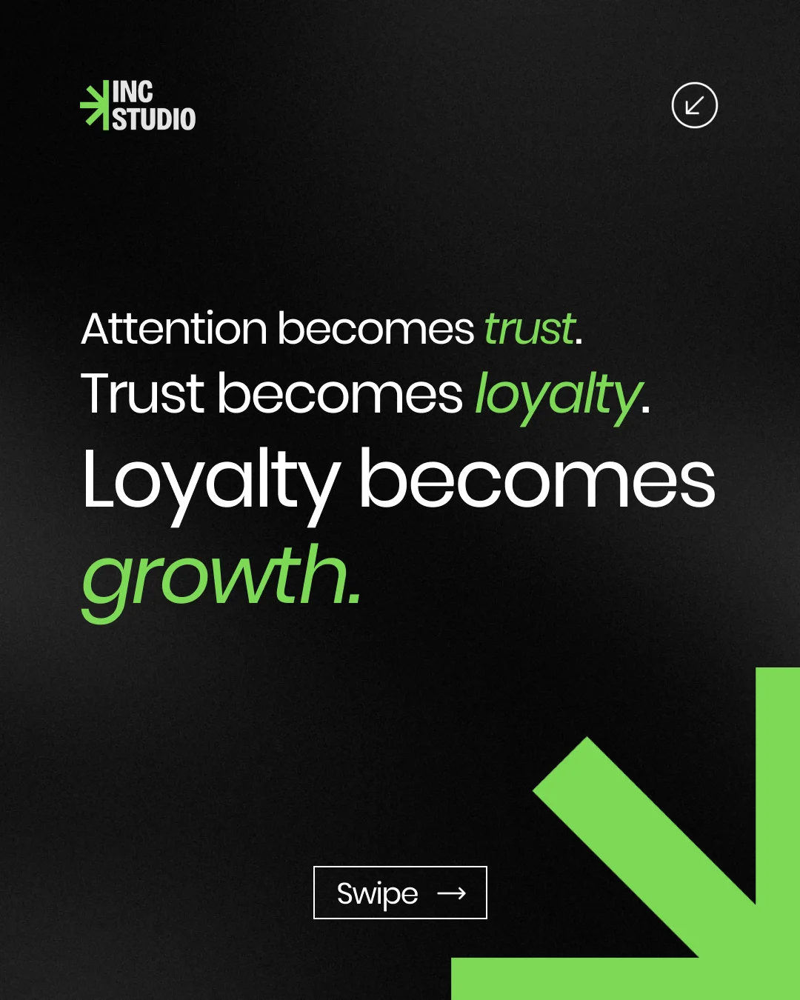
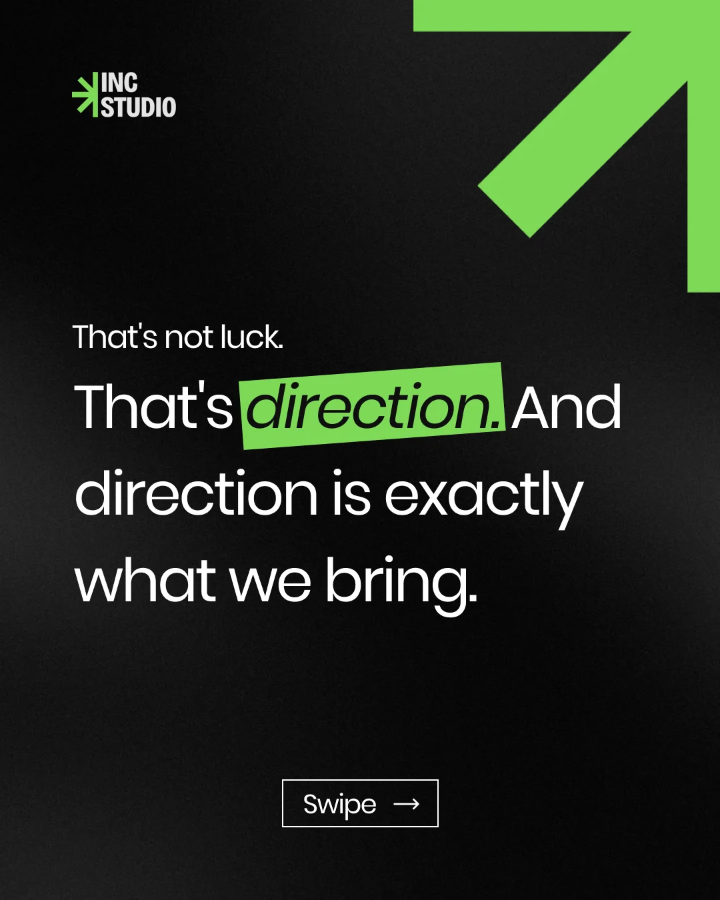
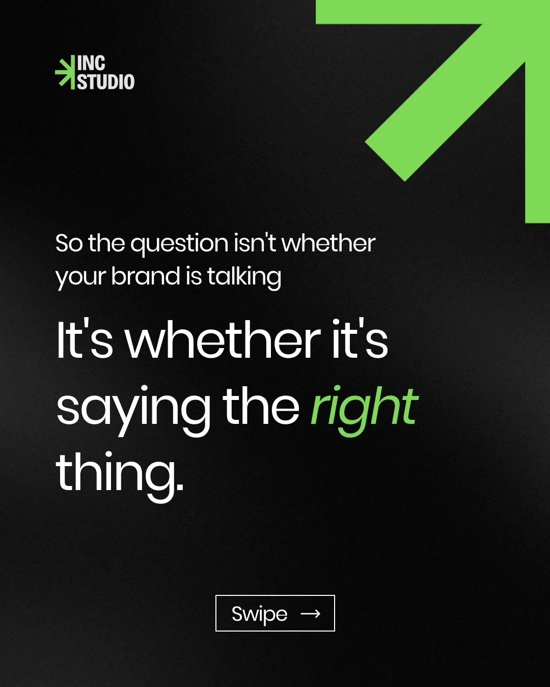
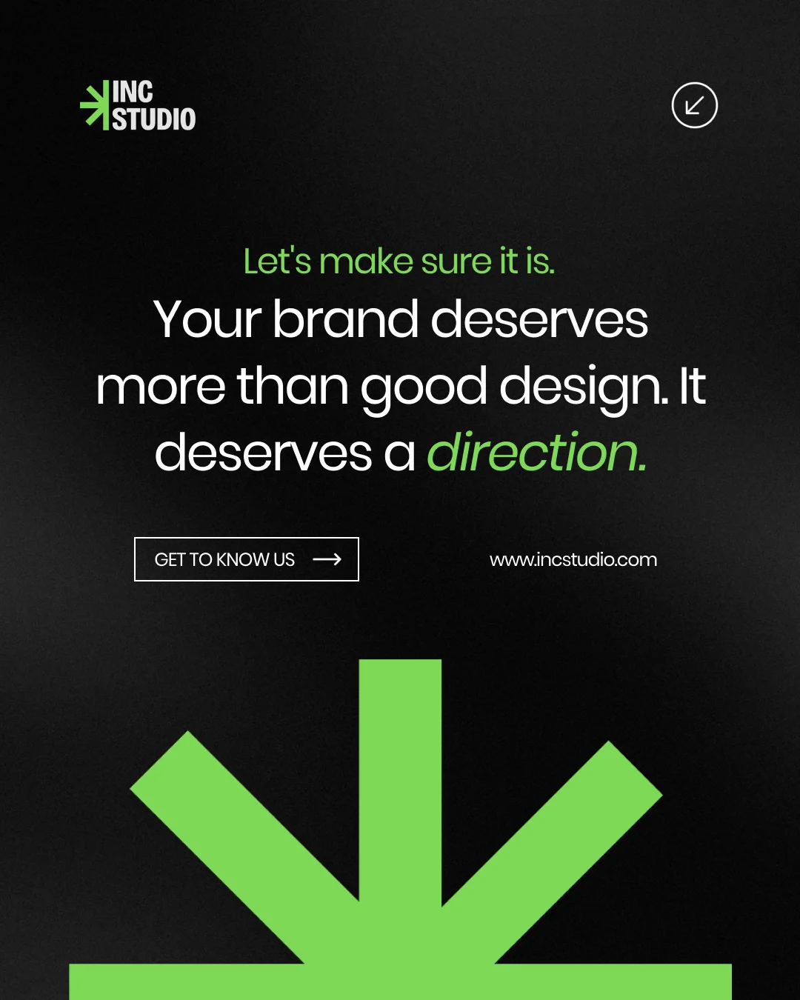

Socials
INC Studio
A 9-slide LinkedIn carousel exploring the idea that reputation, not a logo, is what actually builds a brand.

(01) — The brief
The Brief
This started as a personal exploration into what makes a brand carousel actually work on LinkedIn. I built it around a branding studio concept, INC Studio, to carry the idea that a logo isn't a brand, reputation is, and reputation gets built slowly, one touchpoint at a time. Nine slides gave me enough room to open with a hook, sit with the problem, and close on a clear call to action.
(02) — The carousel
The Carousel
Black backgrounds and a single bright green kept every slide feeling like the same voice, and the green also does double duty as the studio's arrow mark, which shows up bigger and bolder as the carousel builds toward the CTA. Each slide carries one idea and nothing else, so the read stays fast enough for a LinkedIn scroll.

We Build Belief

A Logo Isn't Your Brand

Reputation Isn't Built Overnight

Most Brands Get This Wrong

Your Audience Stops Scrolling

Attention Becomes Trust

That's Direction

Saying the Right Thing

Your Brand Deserves a Direction
Swipe →
(03) — What I learned
What I Learned
Carousel copy has to do more of the work than the visuals do. Every slide only earns the swipe to the next one, so the writing had to build like an argument, hook, problem, turn, payoff, rather than just restating the same idea nine different ways.
It also showed me how far one accent color can carry a whole piece. The green never changes, but where it shows up, a highlighted word, an arrow, a button, kept shifting the emphasis slide to slide.